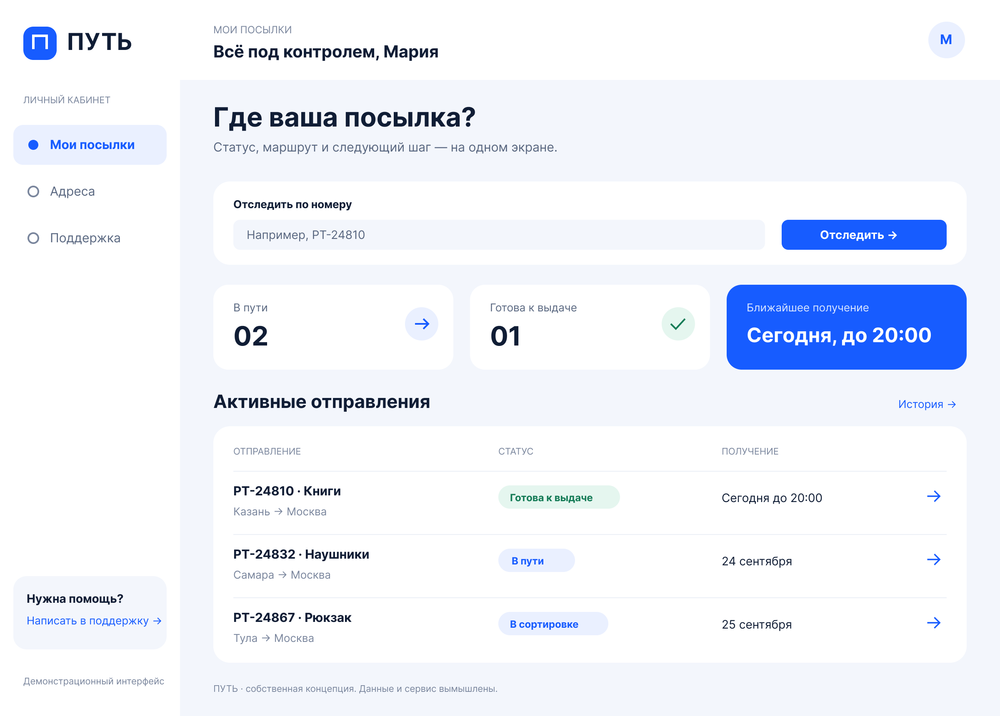

UI concept / Figma / fictional service
ПУТЬ — parcel experience
Two editable desktop screens connect shipment status to pickup action. The case documents Button variants, empty and not-found states, and a separately labeled mobile proposal.
Self-initiated demo with fictional service and data. Image shown is a Figma export. The mobile layouts are local proposals, not Figma frames or validated product screens. No client outcome is claimed.